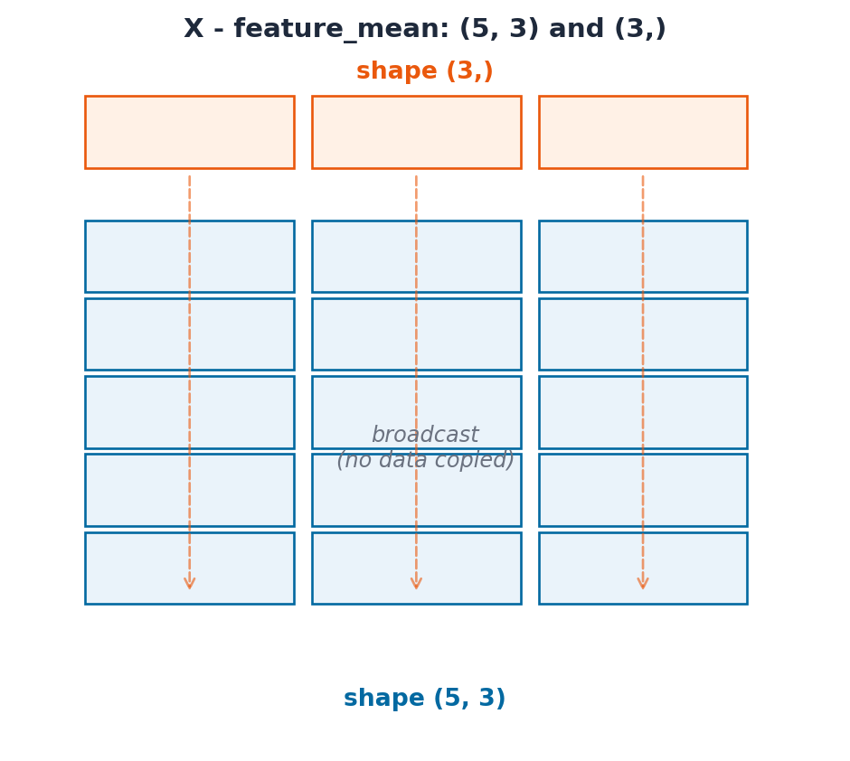

This notebook assumes you have completed Parts 1-3 (01-python-core.ipynb, 02-control-flow.ipynb, 03-python-patterns.ipynb). If you have not, start there.
Every ML library you will use (pandas, scikit-learn, PyTorch, TensorFlow) stores its data as NumPy arrays (or something modelled directly on them) and builds its fast operations on top of NumPy’s rules. This notebook teaches those rules from first principles, using the same university analytics platform running example from Parts 1-3: this time we build a small student feature matrix (study_hours, attendance_pct, prior_gpa) and use it to predict exam_score.
Topic
Why it matters
ndarray vs. list
Why ML libraries do not use plain Python lists
Creating arrays
Build feature matrices and synthetic data
Shape & dtype
Avoid silent shape-mismatch bugs
Indexing & slicing
Select rows, columns, and subsets fast
Boolean masking
Vectorised filtering and labelling
Aggregation & axis
Per-feature vs. per-sample statistics
Broadcasting
The rule behind every elementwise ML operation
Vectorisation
Why loops are slow and arrays are fast
Linear algebra basics
What is under the hood of a linear model
Saving & loading
Persist arrays between pipeline stages
Callout markers used throughout this notebook are explained on the book cover page.
Learning Objectives
#
Skill
Covered in
1
Explain why NumPy arrays outperform Python lists for numeric data
Sec. 1
2
Create arrays with array, arange, zeros, ones, and a modern Generator
Sec. 2
3
Inspect and reshape arrays using shape, dtype, reshape, and stacking
Sec. 3
4
Select data with slicing, fancy indexing, and boolean masks
Sec. 4, 5
5
Compute per-row / per-column statistics with axis
Sec. 6
6
Apply NumPy’s broadcasting rule to vectorise feature engineering
Sec. 7
7
Explain why vectorised code beats Python loops
Sec. 8
8
Use @/np.dot to express a linear model as matrix multiplication
Sec. 9
9
Save and reload arrays with .npy / .npz
Sec. 10
10
Recognise NumPy’s most common silent bugs (views, dtype, float equality)
Sec. 11
1. Why NumPy? The ndarray
A Python list can hold anything (mixed types, nested objects), which makes it flexible but slow for numeric work: every element is a separate Python object, and arithmetic on a list means a Python-level loop.
A NumPy ndarray (“n-dimensional array”) is different: it stores one fixed dtype in a single contiguous block of memory. That uniformity lets NumPy hand the math off to compiled C/Fortran loops instead of the Python interpreter, often 10-100x faster, and with far less memory per element.
import numpy as npstudy_hours = [12, 5, 18, 9, 22]# A Python list has no element-wise arithmetic: this is string repetition, not math!print("list * 2 :", study_hours *2)hours = np.array(study_hours)print("array * 2 :", hours *2) # element-wise multiplication
A NumPy array is homogeneous (one dtype for every element) and has a fixed shape. Because elements sit next to each other in memory, NumPy can vectorise operations: apply one compiled loop to the whole array instead of looping in Python.
Lists are general-purpose containers; arrays are numeric data structures. Use a list for a heterogeneous bag of objects, an array for a column of numbers.
2. Creating Arrays
The most direct way to create an array is np.array() from a Python list (or list of lists, for 2D data). For larger or synthetic data, NumPy provides dedicated creation functions so you never have to type out values by hand.
Synthetic data and simulations need reproducible randomness. Modern NumPy (1.17+) recommends np.random.default_rng(seed) over the legacy np.random.seed(...). A Generator object is self-contained, so two generators never interfere with each other’s state (unlike the old global np.random.seed, which silently affects every call anywhere in the program).
np.random.seed(42) mutates a single global random state shared by your whole program. Any other code (or library) calling np.random.* shifts that shared state and breaks your reproducibility. rng = np.random.default_rng(42) gives you an isolated generator: pass it around explicitly, and your results stay reproducible no matter what else runs.
Activity 1 - Build a Synthetic Student Dataset
Goal: Using rng = np.random.default_rng(7), generate a feature matrix X of shape (50, 3) for 50 students with columns:
study_hours: rng.uniform(0, 25, size=50)
attendance_pct: rng.uniform(50, 100, size=50)
prior_gpa: rng.uniform(2.0, 4.0, size=50)
Combine the three 1D arrays into one (50, 3) array with np.column_stack.
Hint:np.column_stack([a, b, c]) stacks 1D arrays as columns of a 2D array.
rng = np.random.default_rng(7)study_hours = rng.uniform(0, 25, size=50)attendance_pct = rng.uniform(50, 100, size=50)prior_gpa = rng.uniform(2.0, 4.0, size=50)X = ... # TODO: combine the three arrays into one (50, 3) feature matrix# print(f"X.shape : {X.shape}")# print(f"X[0] : {X[0]}")
3. Shape, Size, and dtype
Every array carries metadata you should check before trusting a computation: shape (size along each dimension), ndim (number of dimensions), size (total element count), and dtype (the single data type of every element).
Common Mistake: Mixed int/float input silently upcasts
np.array([1, 2, 3.5]) produces a float64 array, not a mix of int and float. NumPy must pick one dtype for the whole array and silently widens every element to fit. This is usually harmless, but np.array([1, 2, 3], dtype=np.int32) / 2 truncating, or an unexpected int8 overflowing past 127, are the same root cause: always check .dtype when results look wrong.
Reshaping
reshape() returns the same data viewed with a different shape. It does not copy or reorder values, so the total element count (size) must stay the same. -1 tells NumPy “infer this dimension from the others”:
x = np.arange(12)print(f"x : {x} shape={x.shape}")x_grid = x.reshape(3, 4)print(f"reshape(3,4):\n{x_grid}")# -1 means "figure this dimension out for me"x_col = x.reshape(-1, 1) # turn a 1D array into a single columnprint(f"reshape(-1,1) shape: {x_col.shape}")x_flat = x_grid.flatten() # back to 1D - always returns a COPYprint(f"flatten() : {x_flat}")
Common Mistake: reshape() returns a view, flatten() returns a copy
Mutating the result of .reshape() mutates the original array too. They share the same underlying memory. .flatten() always copies, so mutating it is safe. This distinction (view vs. copy) comes up constantly in NumPy; Sec. 11 covers it in more depth.
original = np.arange(6)view = original.reshape(2, 3)view[0, 0] =99# mutating the reshaped VIEW...print(f"view :\n{view}")print(f"original : {original}") # ...also changed the original!
Feature engineering often means assembling separate 1D feature vectors into one 2D matrix, or stacking two matrices together. Use the right function for the shape change you want:
Function
Effect
np.column_stack([a, b, ...])
1D arrays -> columns of a 2D array
np.hstack([a, b])
Join side-by-side (same number of rows)
np.vstack([a, b])
Stack on top of each other (same number of columns)
np.concatenate([a, b], axis=...)
General join along a chosen axis
gpa = np.array([3.1, 2.4, 3.8, 2.9])attendance = np.array([85, 60, 95, 70])# Two 1D feature vectors -> one (4, 2) matrixcombined = np.column_stack([gpa, attendance])print(f"column_stack:\n{combined}")# Two (4, 2) batches of students -> one (8, 2) matrixmore_students = np.array([[3.5, 90], [2.0, 55]])all_students = np.vstack([combined, more_students])print(f"vstack shape: {all_students.shape}")
NumPy indexing extends Python’s list slicing to multiple dimensions. For a 2D array, the convention is array[rows, columns], and negative indices still count from the end.
scores = np.array([62, 78, 85, 91, 55, 73, 88, 95, 67, 80])print(f"first three : {scores[:3]}")print(f"last three : {scores[-3:]}")print(f"between 3 & 7 : {scores[3:7]}")print(f"every other : {scores[::2]}")print(f"reversed : {scores[::-1]}")
first three : [62 78 85]
last three : [95 67 80]
between 3 & 7 : [91 55 73 88]
every other : [62 85 55 88 67]
reversed : [80 67 95 88 73 55 91 85 78 62]
Common Mistake: Basic slices are views; fancy/boolean indexing copies
X[:, 1] (a slice) returns a view: mutating it mutates X. X[1:4, [0, 2]] (a list of indices, known as “fancy indexing”) always returns a copy. If you need an independent array from a slice, call .copy() explicitly: col = X[:, 1].copy().
Activity 2 - Select Top Performers
Goal: Given the X feature matrix above (columns: study_hours, attendance_pct, prior_gpa), use slicing to print:
The prior_gpa column (all rows)
The first two rows, all columns
The study_hours and prior_gpa columns (skip attendance) for every row
Hint: For (3), use fancy column indexing: X[:, [0, 2]].
Comparing an array to a value produces a boolean array of the same shape: a “mask.” Using that mask to index the original array keeps only the True positions. This replaces if/for filtering loops entirely.
Combine conditions with & (and) / | (or), not Python’s and/or, which only work on single booleans, not arrays. Each side needs its own parentheses because &/| bind tighter than comparison operators:
at_risk mask : [False False False False False False False False True False]
n at risk : 1
np.where(condition, if_true, if_false) builds a new array by choosing between two values element-wise: the vectorised equivalent of a ternary expression inside a loop:
labels = np.where(scores >=70, "pass", "fail")print(labels)# np.select handles more than two outcomesgrade = np.select( [scores >=90, scores >=80, scores >=70, scores >=60], ["A", "B", "C", "D"], default="F",)print(grade)
Goal: Given scores and attendance arrays, build a boolean mask needs_help that flags students with score < 70orattendance < 60, then print how many students were flagged and their scores.
mean(), sum(), std(), min(), max() collapse an array to a single number by default. On a 2D matrix, the axis argument controls which dimension gets collapsed : this is the single most common source of “right function, wrong number” bugs in DS/ML code, so get the convention straight now:
axis=0 collapses rows -> one result per column (per feature)
axis=1 collapses columns -> one result per row (per sample)
X = np.array( [ [12.0, 85.0, 3.1], [5.0, 60.0, 2.4], [18.0, 95.0, 3.8], [9.0, 70.0, 2.9], [22.0, 98.0, 3.9], ])print(f"overall mean : {X.mean():.2f}") # one number, all 15 valuesprint(f"per-feature mean : {X.mean(axis=0)}") # shape (3,): one per columnprint(f"per-student mean : {X.mean(axis=1)}") # shape (5,): one per rowprint(f"per-feature std : {X.std(axis=0)}")print(f"per-feature min/max : {X.min(axis=0)} / {X.max(axis=0)}")
“axis=0” is easy to misremember. Read it as: “collapse axis 0 (the row axis): what’s left is one value per column.” If you want one statistic per feature (the usual case before normalising a feature matrix), that is always axis=0.
7. Broadcasting
Broadcasting is the rule NumPy uses to apply an operation between two arrays of different shapes, by virtually “stretching” the smaller one, without actually copying any data. It is what lets you write X - X.mean(axis=0) instead of a loop over rows.
Key Concept: The Broadcasting Rule
Compare shapes from the right-hand side. Two dimensions are compatible when they are equal, or when one of them is 1 (it gets stretched to match). Missing leading dimensions are treated as 1.
(5, 3) and (3,) → treat (3,) as (1, 3) → stretch to (5, 3). ✅ (5, 3) and (5,) → treat (5,) as (1, 5) → 3 != 5 and neither is 1. ❌
X = np.array( [ [12.0, 85.0, 3.1], [5.0, 60.0, 2.4], [18.0, 95.0, 3.8], [9.0, 70.0, 2.9], [22.0, 98.0, 3.9], ])feature_mean = X.mean(axis=0) # shape (3,) -- one mean per featurefeature_std = X.std(axis=0) # shape (3,)print(f"X.shape : {X.shape}")print(f"feature_mean.shape : {feature_mean.shape}")# (5, 3) - (3,) broadcasts the mean across every row: no loop neededX_normalised = (X - feature_mean) / feature_stdprint(f"normalised:\n{X_normalised}")print(f"new per-feature mean (~0): {X_normalised.mean(axis=0).round(6)}")
The diagram below makes the rule literal: the top row is feature_mean, shape (3,). NumPy stretches it down to align with every one of the 5 rows in X, without ever actually copying it 5 times in memory.
from ark.plot.diagrams import broadcasting_diagrambroadcasting_diagram();

Common Mistake: Broadcasting a (5,) array against a (5, 3) matrix fails for a subtle reason
If you instead compute per_student_mean = X.mean(axis=1) (shape (5,)) and try X - per_student_mean, NumPy raises ValueError: operands could not be broadcast together. It is comparing the trailing dimensions 3 vs 5, not what you meant. Fix it by giving the per-row result an explicit column shape with keepdims=True: X.mean(axis=1, keepdims=True) has shape (5, 1), which broadcasts correctly against (5, 3).
row_mean = X.mean(axis=1, keepdims=True) # shape (5, 1), NOT (5,)print(f"row_mean.shape : {row_mean.shape}")# (5, 3) - (5, 1) broadcasts the per-row mean across every columncentered_per_row = X - row_meanprint(f"centered_per_row:\n{centered_per_row}")
Goal: Write a one-line expression that scales every column of X to the [0, 1] range using the formula (X - X.min(axis=0)) / (X.max(axis=0) - X.min(axis=0)). Confirm the result’s per-column min is 0 and max is 1.
X = np.array( [ [12.0, 85.0, 3.1], [5.0, 60.0, 2.4], [18.0, 95.0, 3.8], [9.0, 70.0, 2.9], [22.0, 98.0, 3.9], ])X_scaled = ... # TODO: min-max scale every column to [0, 1]# print(f"min per column: {X_scaled.min(axis=0)}")# print(f"max per column: {X_scaled.max(axis=0)}")
8. Vectorisation vs. Python Loops
Now that you can express normalisation as (X - mean) / std with no loop, it is worth seeing why that matters. Every NumPy operation you have used so far runs as a single compiled loop over contiguous memory; a Python for loop pays the cost of the interpreter on every single element.
import timebig = np.random.default_rng(0).normal(size=1_000_000)def zscore_loop(values: np.ndarray) ->list[float]: mean =sum(values) /len(values) variance =sum((v - mean) **2for v in values) /len(values) std = variance**0.5return [(v - mean) / std for v in values]start = time.perf_counter()_ = zscore_loop(big)loop_time = time.perf_counter() - startstart = time.perf_counter()_ = (big - big.mean()) / big.std()vector_time = time.perf_counter() - startprint(f"Python loop time : {loop_time:.4f}s")print(f"Vectorised time : {vector_time:.4f}s")print(f"Speedup : {loop_time / vector_time:,.0f}x")
Python loop time : 0.4449s
Vectorised time : 0.0146s
Speedup : 31x
Pro Tip: If you are writing a for loop over an array, stop and look for a vectorised way
Almost every elementwise transformation, filter, or aggregation you would write as a Python loop already has a NumPy equivalent: arithmetic operators, np.where, boolean masks, axis aggregations. Reach for those first: a hand-written loop over a large array is one of the most common DS/ML performance bugs, and it is usually a 10-100x slowdown for no benefit.
9. Linear Algebra Essentials
A linear model’s prediction is a dot product: multiply each feature by a learned weight, sum the results, add a bias. @ (matrix multiplication) computes this for every row of a feature matrix at once, no loop over students required.
X = np.array( [ [12.0, 85.0, 3.1], [5.0, 60.0, 2.4], [18.0, 95.0, 3.8], [9.0, 70.0, 2.9], [22.0, 98.0, 3.9], ]) # shape (5 students, 3 features)# Suppose a (already-fitted) linear model has these learned weights and biasweights = np.array([1.5, 0.3, 8.0]) # one weight per feature, shape (3,)bias =10.0# X @ weights: (5, 3) @ (3,) -> (5,) -- one prediction per studentpredicted_scores = X @ weights + biasprint(f"predicted_scores: {predicted_scores.round(1)}")
predicted_scores: [ 78.3 54.7 95.9 67.7 103.6]
@ on a matrix and a vector is shorthand for: for each row, multiply element-wise by weights and sum: exactly (X * weights).sum(axis=1). Verify the two are equivalent, then measure prediction error against the true scores with np.linalg.norm (the Euclidean / RMS-style distance):
# @ is equivalent to elementwise multiply + sum along axis=1manual = (X * weights).sum(axis=1) + biasprint(f"@ matches manual sum: {np.allclose(predicted_scores, manual)}")actual_scores = np.array([88.0, 65.0, 95.0, 78.0, 99.0])errors = predicted_scores - actual_scoresrmse = np.linalg.norm(errors) / np.sqrt(len(errors))print(f"errors : {errors.round(1)}")print(f"RMSE : {rmse:.2f}")
np.allclose(a, b) was used above instead of (a == b).all() on purpose: floating-point arithmetic accumulates tiny rounding errors, so two mathematically-equal results can differ in their last bit. Always compare floats with a tolerance: np.allclose, or abs(a - b) < 1e-9, never with exact ==.
10. Saving & Loading Arrays
A typical pipeline computes a feature matrix once and reuses it across many later steps (training, evaluation, serving). .npy stores a single array in NumPy’s own binary format: far smaller and faster to read than CSV for numeric data, and it preserves dtype and shape exactly. .npz bundles several named arrays together.
from pathlib import Pathtmp_dir = Path("tmp_numpy_activity")tmp_dir.mkdir(exist_ok=True)X = np.array([[12.0, 85.0, 3.1], [5.0, 60.0, 2.4], [18.0, 95.0, 3.8]])y = np.array([88.0, 65.0, 95.0])# Save a single arraynp.save(tmp_dir /"X.npy", X)X_loaded = np.load(tmp_dir /"X.npy")print(f"round-trip equal: {np.array_equal(X, X_loaded)}")# Save several named arrays together in one filenp.savez(tmp_dir /"dataset.npz", features=X, target=y)bundle = np.load(tmp_dir /"dataset.npz")print(f"keys : {list(bundle.keys())}")print(f"target : {bundle['target']}")
Like the Python gotchas in Part 3, none of these raise an exception. They silently produce a wrong (or surprising) result. Recognise them now so you do not lose hours to them later.
# GOTCHA 1: basic slicing returns a VIEW, not a copyscores = np.array([62, 78, 85, 91, 55])top_three = scores[:3]top_three[0] =0# mutating the "slice"...print(f"top_three : {top_three}")print(f"scores : {scores}") # ...changed the original too!# Fix: copy explicitly when you need an independent arraysafe_copy = scores[:3].copy()
top_three : [ 0 78 85]
scores : [ 0 78 85 91 55]
# GOTCHA 2: integer dtype truncates on division-like ops, and can overflowsmall = np.array([120, 10], dtype=np.int8)print(f"int8 + 50 : {small +50}") # 120 + 50 = 170, overflows int8's max of 127!# Fix: use a wide-enough dtype, or let NumPy infer (default is int64/float64)safe = small.astype(np.int64) +50print(f"int64 + 50: {safe}")
int8 + 50 : [-86 60]
int64 + 50: [170 60]
# GOTCHA 3: {} is a dict, not a set -- same trap as in plain Python (Part 3, Sec. 8)empty_dict = {}empty_set =set()print(f"type({{}}) : {type(empty_dict)}")print(f"type(set()) : {type(empty_set)}")# GOTCHA 4: comparing floats with == (see Sec. 9 for the fix: np.allclose)a = np.array([0.1+0.2])print(f"0.1 + 0.2 == 0.3 : {a ==0.3}") # False! 0.30000000000000004 != 0.3print(f"np.allclose : {np.allclose(a, 0.3)}") # True: tolerant comparison
---------------------------------------------------------------------------TypeError Traceback (most recent call last)
CellIn[30], line 16 13 rmse = ...
15print(f"predicted: {predicted}")
---> 16print(f"RMSE : {rmse:.2f}")
TypeError: unsupported format string passed to ellipsis.__format__
Exercise 2 - Vectorised Anomaly Detector
Goal: Rewrite the deque-based anomaly detector from Part 3 (Sec. 9, Exercise 3) without any explicit loop. Flag any reading more than 2 standard deviations from the overall mean using a single boolean mask.
---------------------------------------------------------------------------AttributeError Traceback (most recent call last)
CellIn[31], line 6 3 z_scores = ... # TODO 4 anomaly_mask = ... # TODO----> 6print(f"z_scores : {z_scores.round(2)}")
7print(f"anomaly_mask : {anomaly_mask}")
8print(f"anomalies : {readings[anomaly_mask]}")
AttributeError: 'ellipsis' object has no attribute 'round'
What’s New in NumPy 2.0
NumPy 2.0 (released June 2024) is the first major version bump in almost two decades. Two changes matter most for day-to-day data science work:
Removed type aliases
The old Python-builtin aliases (np.int, np.float, np.bool, np.complex, np.object, np.str) were deprecated for years and are now fully removed. They were just aliases to the Python built-ins anyway, so the fix is mechanical:
Old (removed)
Replacement
np.bool
np.bool_ or Python bool
np.int
np.intp or Python int
np.float
np.float64 or Python float
np.complex
np.complex128 or Python complex
np.object
np.object_ or Python object
np.str
np.str_ or Python str
StringDType for proper string arrays
NumPy 2.0 introduced np.dtypes.StringDType(), a real variable-length string dtype backed by UTF-8 memory. The old np.str_ stored fixed-width UCS-4 strings (one array dtype for every character count), StringDType stores arbitrary-length strings efficiently.
Pro Tip: Use np.float64 not np.float in new code
If you see a module ‘numpy’ has no attribute ‘float’ error, the codebase was written against NumPy 1.x. A global search-and-replace of np.float → np.float64 (and so on for the others in the table) is the complete fix.
import numpy as np# Old aliases are REMOVED in NumPy 2.0 — this would raise AttributeError:# arr = np.array([1, 2, 3], dtype=np.float) # ❌# Use the explicit dtype names instead:arr = np.array([1, 2, 3], dtype=np.float64) # ✅print(f"dtype: {arr.dtype}")# StringDType: variable-length strings, efficient UTF-8 storage (NumPy 2.0+)names = np.array(["Alice", "Bob", "Charlie"], dtype=np.dtypes.StringDType())print(f"names : {names}")print(f"dtype : {names.dtype}")# The old fixed-width str_ is still available but StringDType is the modern choiceold_style = np.array(["Alice", "Bob", "Charlie"]) # infers str_ (fixed width)print(f"old dtype: {old_style.dtype}") # <U7 means Unicode, 7 chars wide